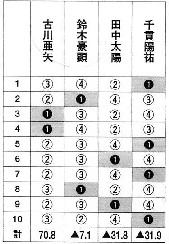

今年の野口恭一郎賞棋士部門、決勝戦には古川亜矢、鈴木豪顕、田中太陽、千貫陽祐の４名が残った。決勝戦は、全10回戦のトータル プラマイで争われ、古川pがトータル＋70.8で優勝した。他は３人ともトータルマイナスなので、いわば古川pの圧勝という形。

この成績表を見ていて、面白いことに気が付いた。トップ数を見ると、優勝した古川pが２回、以下 鈴木p ２回、田中p ２回、千貫p ４回である。
純麻雀では、トップ数が成績の基本。
そこで仮に この対戦が純麻雀評価で行われたとしたら、トータル プラマイ式ではラス位となった千貫pが、逆に勝率４割の圧勝となった。他の３人は同勝率であるが、順位をつけるとすれば順位率の差で２位
古川p、３位 田中p、４位 鈴木pとなる。
またこの対戦では、９回戦が終わった段階で
トップ目の古川pと２位目との差は76.4点という大差があったという。これは最終戦で２位めがミラクル大トップを取らなければ逆転できない。そこで実質的には、９戦めまでほとんど勝負は決まっていたといって良い。
しかし９戦めが終わった段階で千貫pはトップ３回、他の３人は２回。そこで評価が純麻雀式であった場合、他の３人の誰かがトップを取れば千貫pと同勝率となった。すると順位率の差で、最終戦のトップ者が優勝者になるという大接戦。
101という評価法がある。101はトップを評価するという点では純麻雀と同じであるが、ラスを引くとその回数だけトップが帳消しになる。その評価法にしたがうと、古川pは＋２、田中pは−２、鈴木pと千貫pは+-０となり、優勝は古川pで４位は田中pとなる。
また中麻のように順位点のみを評価する方式もある。この場合、ラスゼロの古川pの優勝は動かないものの ２位以下の順位には変動が生じる。
もちろん評価法が異なれば、戦い方も異なる。戦い方が異なれば、結果も異なってくる。それは当然として、このように多種多様な勝敗評価法が存在するのは、競技麻雀もまだまだ未成熟な段階ということか....
|